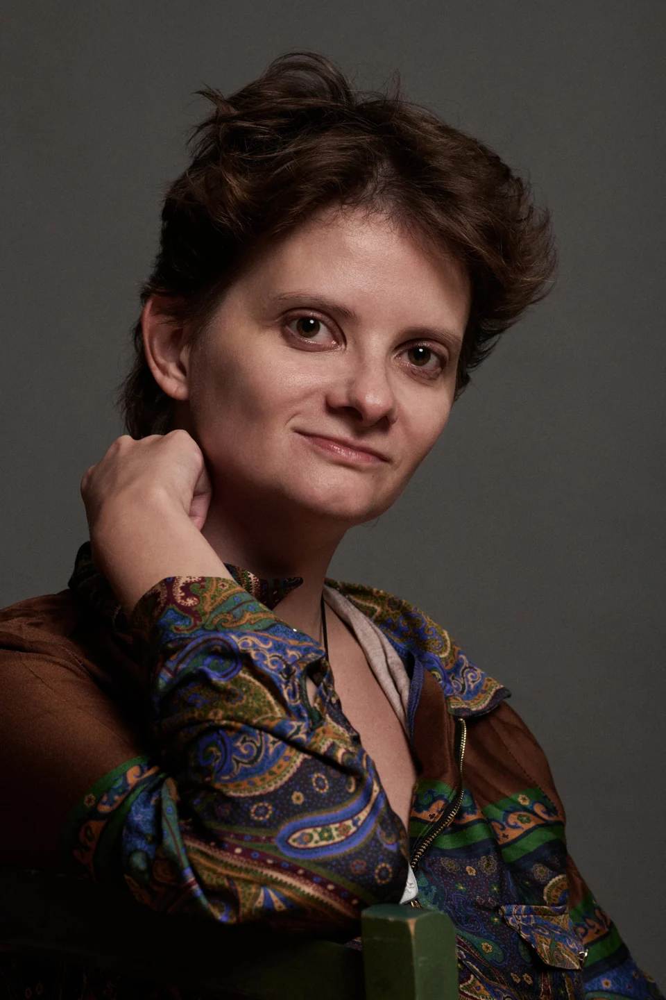

The human bit
Hi, I'm
Kate.
A bit about my work, where my curiosity takes me, and the things I do when my laptop is closed.


I like asking questions and making things.
I'm an AI engineer and researcher with a PhD from Ghent University. I've worked in research, consulting and production software, mostly with language technology. I enjoy turning a complicated problem into something practical.
Outside my day job, you'll usually find me reading about history and politics, helping with civic-tech projects, watching films or working on speculative fiction. I like both the technical details and the human messiness that make a system interesting.
My interests overlap more than they seem to. I like asking how things work, who they work for, and what might happen if we tried something different.
Things I'm into.
No personality inventory required. Here are a few things I happily lose entire evenings to.
Speculative fiction, history and linguistics
Invented worlds, real political history, and the strange ways language shapes how we think.
Film well beyond Hollywood
Modern European, Asian and African cinema; visually ambitious stories and complicated people.
Shinedown. And musicals.
Yes, I like hard-hitting rock and theatrical songs. I do not consider this a contradiction.
Cyberpunk 2077
A favourite example of how setting, politics, atmosphere and character can reinforce one another.
There's a whole other side of this site.
Rock music, games, peculiar history, films and a work-in-progress novel. The raccoon is particularly at home there.
Visit After Hours ↗